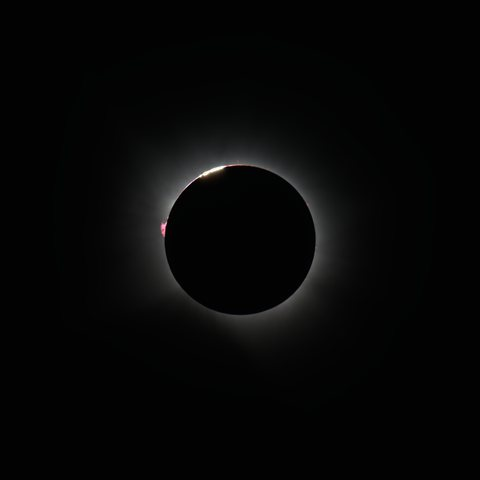

Guía
Cómo fotografiar el eclipse total del 2 de agosto de 2027
Dónde y cuándo ocurre la totalidad en España, qué equipo llevar y qué serie de exposiciones disparar para sacar después la corona entera, la cromosfera y la luz cenicienta.
1
Qué va a pasar el 2 de agosto de 2027
El 2 de agosto de 2027 hay un eclipse total de Sol cuya franja de totalidad cruza el Estrecho de Gibraltar de oeste a este. Según el Instituto Geográfico Nacional, en España cubre Ceuta, Melilla, casi toda la provincia de Cádiz, parte de la de Málaga y las zonas más meridionales de Granada y Almería. En el resto de la península se verá parcial.
| Lugar | Inicio de la totalidad (hora peninsular) | Duración |
|---|---|---|
| Ceuta | 10:45 | 4 min 48 s |
| Melilla | 10:48 | 4 min 34 s |
| Cádiz | 10:45 | 2 min 54 s |
| Málaga | 10:48 | 1 min 48 s |
El eclipse empieza a las 9:30 en el Atlántico y acaba a las 14:43 en el Índico. El máximo, 6 min 23 s de totalidad, se da en Egipto, a las 12:06 hora peninsular (IGN). La NASA confirma esos 6 min 23,2 s como la duración máxima y lo sitúa en el ciclo de Saros 136.
Las duraciones dependen del punto exacto: dentro de una misma ciudad cambian de un barrio a otro y cerca de los bordes de la franja bajan deprisa. Consulta tu lugar concreto en el mapa de Xavier Jubier antes de decidir dónde plantar el trípode.
2
Dónde colocarte
Más cerca del eje de la franja, más segundos de totalidad: Ceuta y Melilla tienen casi el doble que Cádiz, y Málaga está ya cerca del borde. Con una serie larga de exposiciones, cada segundo de más es una exposición más.
- Horizonte despejado en la dirección del Sol. Hazlo de día y con la aplicación de un mapa o con las tablas de Jubier, no el día del eclipse.
- Plan B. Las nubes no avisan: ten pensado un segundo lugar al que llegar en poco tiempo, y mira la previsión los días anteriores.
- Sitio fácil de llegar y sin prisas. Una carretera cortada o un aparcamiento lleno el día del eclipse te quita más totalidad que un mal encuadre.
3
Equipo que necesitas
- Cámara con RAW y control manual completo. Mejor con batería y tarjetas de sobra.
- Teleobjetivo o telescopio. Con 400-600 mm el disco ocupa una parte buena del encuadre y la corona interior sale con detalle. Con focales más cortas entra más corona lejana, aunque más pequeña.
- Trípode firme o, mejor, una montura con seguimiento. Sin seguimiento, el Sol se desplaza en el encuadre durante la serie; Easy Corona alinea las fotos, pero deja margen en los bordes.
- Filtro solar delante del objetivo para todas las fases parciales. Solo se quita durante la totalidad y se vuelve a poner en cuanto reaparece el primer destello. La NASA explica la seguridad al observar un eclipse en su página de seguridad.
- Mando disparador o intervalómetro, o el ordenador conectado. Tocar la cámara mueve la imagen.
- Linterna con luz roja: durante la totalidad hace una oscuridad parecida a la del crepúsculo.
4
La serie de exposiciones para el HDR
Durante la totalidad la corona es miles de veces más brillante junto a la Luna que en sus serpentinas lejanas. Ninguna foto sola recoge todo, y por eso se dispara una serie: de exposiciones muy cortas, que guardan las protuberancias y el borde de la Luna, a otras de un segundo o más, que sacan la corona exterior y la luz cenicienta.
| Velocidad | Qué recoge |
|---|---|
| 1/4000 – 1/1000 s | Protuberancias, cromosfera y el borde de la Luna |
| 1/500 – 1/125 s | Corona interior |
| 1/60 – 1/15 s | Corona media |
| 1/8 – 1 s | Serpentinas lejanas |
| 1 – 2 s | Luz cenicienta en el disco de la Luna (con la corona interior ya muy quemada) |
Es un punto de partida para f/6,3-f/8 e ISO 100-400, con un paso de un punto de exposición entre fotos. No hay una receta única: la transparencia del cielo y la altura del Sol cambian los valores. Haz una prueba con la Luna llena o con el Sol con el filtro puesto, para ver en la pantalla qué parte de la imagen se quema con cada velocidad.
- Todo en manual: exposición, enfoque, balance de blancos y estabilizador apagado.
- Programa la serie de antemano: una secuencia que recorra las velocidades de la más corta a la más larga y vuelva a empezar, con el intervalómetro o el ordenador. En 2 min 54 s caben varias vueltas completas.
- Repite cada exposición varias veces. Easy Corona las promedia y baja el ruido, sobre todo en la corona lejana.
- RAW siempre, sin reducción de ruido de larga exposición y con la misma sensibilidad en toda la serie.

5
Cromosfera y luz cenicienta
La cromosfera y las protuberancias se ven justo después del segundo contacto y justo antes del tercero, cuando la Luna deja un borde fino del Sol. Aprovecha esos segundos con las velocidades más rápidas de la serie y un par de fotos de más.
La luz cenicienta es la luz de la Tierra que rebota en la Luna: tiene tan poca luz que solo se ve con exposiciones largas, cuando la corona interior ya está quemada. En Easy Corona no hace falta fotografiarlas aparte: con las mismas exposiciones de la serie, la app propone cuáles usar para cada capa.
6
Errores típicos
- Quitar el filtro demasiado pronto o ponerlo tarde. Sin filtro solo durante la totalidad completa.
- Enfocar durante la totalidad. Enfoca antes, sobre el borde del Sol con el filtro y con la ampliación de la pantalla, y fija el enfoque con cinta.
- Una sola exposición. Con una foto, o la corona queda quemada junto a la Luna o desaparece lejos de ella.
- Cambiar valores a mitad de la serie. Mantén ISO y diafragma y varía solo la velocidad.
- Mover el trípode o tocar la cámara al cambiar de exposición.
- No ensayar. Haz la secuencia completa varias veces antes, con el Sol con filtro o con la Luna llena.
- Mirar solo la pantalla. Si la secuencia está programada, levanta la vista unos segundos: es el espectáculo.
7
Y después, el HDR
Con la serie en la tarjeta, el trabajo está en unirla: alinear, apilar y realzar la corona. Easy Corona lo hace en un clic.
8
Fuentes
- Instituto Geográfico Nacional: Eclipse total de Sol del día 2 de agosto de 2027. Horas, duraciones y provincias de la franja.
- NASA, Five Millennium Catalog / Google Maps de eclipses: Total Solar Eclipse of 2027 Aug 02. Duración máxima y Saros 136.
- Xavier Jubier: mapa interactivo del eclipse de 2027. Horas y duración en cualquier punto de la franja.
- NASA: seguridad al observar un eclipse.
Comprueba siempre las horas de tu punto exacto en la fuente oficial antes del día del eclipse.